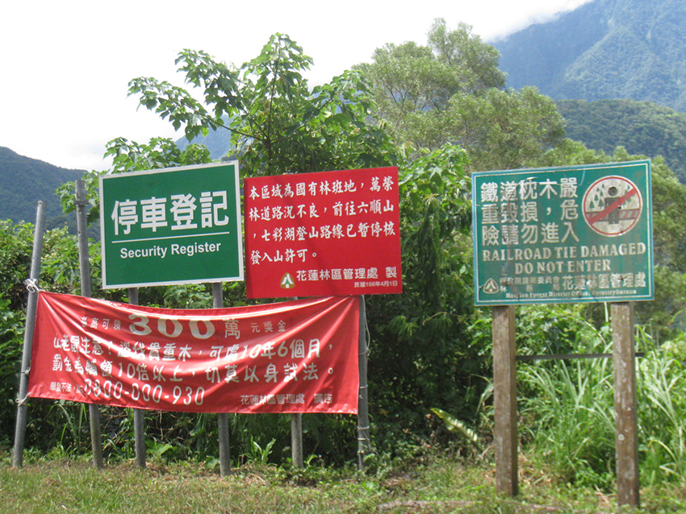
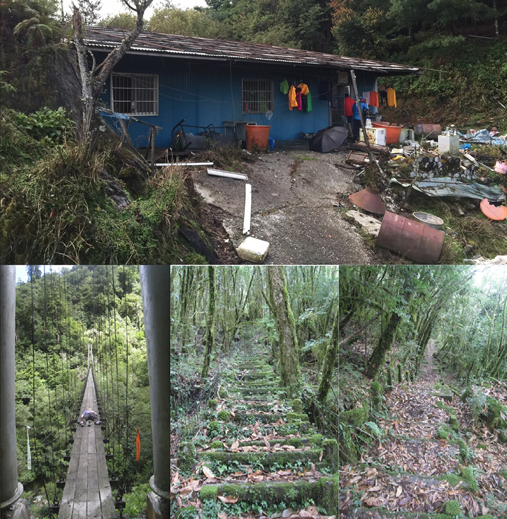
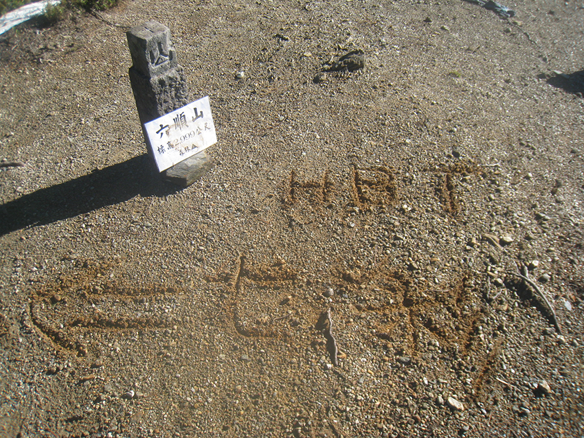
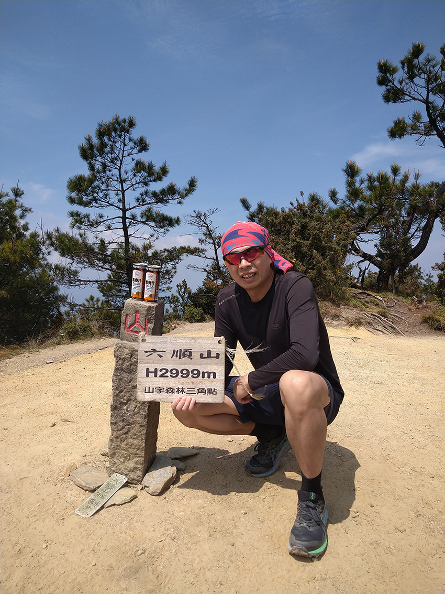

前言
六順山，很多完百山友都會說到管制時代口中的“黑山”也就是封很久沒開放需要偷偷走的山頭，當時有二個主要進入口，花蓮鳳林“萬榮林道”及 南投信義“丹大林道”當時因山林未開放，無法正常申請，因此成為很多完百山友的最後一塊拼圖。
縱走規劃：
首次前往是2017年7月26日從“萬榮林道”進入，因跟商業團人數眾多有九位一起，當時完全沒有黑山概念，有活動沒走過當然要加一，接泊車最多到林道9K，無法再往前的原因是前面有管制站要繞開，上切香蕉園短短五百公尺花了三十分鐘，印象中住了一晚隔天碰到管制站工作人員帶研究人員進行生物調查，原本想摸早黑混過去，但最後還是被勸退…還好此次沒被開單告發。
|  |
|
當年公告牌於民國106年4月1日（但早在99年已封禁）。 |
第二次前往隔二個月後，從相同地方前往，比起從另一頭“丹大林道”上百公里的距離，踢林道光靠雙腳少說也要花2~3天，而當時機車接泊一個人喊出快2W，所以完全不考慮此選項，因此規劃此次五天行程。此次隊友挑選過，相對會有較大彈性，第一天從9K走到25K工寮就碰到下大雨，所以就在此住宿一晚，第二天就卯起來直接走到高登聯絡站，粗略估計少說當天也有踼25K，已是當年極限。
第三天重點行程日，輕裝走了三小時順利抵達六順山，因天氣不穩有飄雨只有我跟“家文”一同前往七彩湖，而且規劃要走O繞沿鐵道，此路線少有人走，找路繞了二個小時後才過雙龍瀑布，太多路段鐵已經懸空，只能下切到溪谷再上來，當時已有不少鐵道損壞嚴重都要手腳趴著慢慢前進，深怕木板破裂掉落，走出來後一致認為這個不能推薦山友來走，出事機率太大。
第四天回程算好運，在過完大崩壁後35.5K接泊，此接泊是第二天碰到，所以約定這時間，說到“萬榮林道”接泊，又會扯出黑歷史，回程單接到鳳林火車站一車5K，也就是說當下這價格與 “丹大林道”每人來回要2W根本衝擊到某些人的利益太多，果然行程結束沒幾週就發生接泊大哥連車帶人意外跌落，而且在沒接泊客人情況下,不少傳言說是衝擊到“丹大林道”太多利益而被意外，後續“萬榮林道”也就慢慢被弱化，太多紛擾唯有保持初心才能真正享受爬山樂趣。
|  |
|
情人橋 >> 4800多階天梯 >> 高登聯絡站。 |
單攻規劃：
當天來回原本不在自己計劃表內，主要考慮到“丹大林道”距離破百公里光想就覺得累，但有強大的隊友什麼都變可能，不刻意反而解鎖了這行程。孫海橋到溪對岸接泊路線已經被挖開不讓過，所有的接泊車全留在對岸，但我們是去跑步的，所以我們自己開車停在對岸，直接走下溪床涉水而過，開局鞋子就濕。
去程林道多為上坡，都快走行進，直到六分所大休後，下坡才有小跑起來，此為耐力行程，中途還是固定約2小時補給休息，但休息都不會超過5分鐘，林道補水來說都沒問題，因此水只帶500cc，加上半夜行進所消耗水分比較少，大約早上五點時抵達高繞路口，林道要走16K，但高繞只需6K，除非移動速度可以持續六分速或更快不然建議直接高繞，挑戰16K可以去全臺最高廟宇-海天寺回程下坡時比較有利，上切高繞走了1小時40分才繞到6K支線9.5K處，而這裡的地標是人可以通過後上去隧道口上拍照。
往下再走會看到南投縣與花蓮縣交界牌，接著約走四十分就到六順山與七彩湖叉路口，當然先前往六順山打卡，來回正常走3小時，回到叉路都還沒到中午，這時接近中午天氣最熱時候，所以快速的往七彩湖前進，不到十分鐘抵達，但懶得下到湖底，所以就直接問其它團山友有沒有水可以補給，因為超多頂帳篷剛好有乘坐的接泊車山友在之前有接一大桶活水，直接先喝飽再補充500CC，我跟Harry保留體力短暫休息後開始返回，Oscar原本在六順山提早返回要去光華復旦也從後面出現，跟我們說婉拒了想免費載我們回去的接泊車，七彩湖到孫海橋至少還有50公里，二個起水泡隊友外加小腿抽筋的我，難得雙腳破百公里行程當然不可能搭車，只能目送接泊車離開，而接下來的策略就是下坡就小跑。
回程相對來時簡單，但要先到隧道口高繞，第一次挑戰破百公里的我跟Harry只能選擇原路高繞回去，Oscar自己去增加公里數，大約下午一點半到高繞點，休息十分鐘補給一下才開始上坡，繞出來都超過三點了，因為有約好在23.5K的六分所會合，果然是高繞比較快，四點快五十分到，躺平了三十分鐘Oscar才出現，看起來腳底的水泡也開始讓他速度變慢，休息整裝後準備挑戰緩跑下山，帶傷持續跑這最後半馬的路程，沿途還碰到落石，還好沒有大石頭下來，雖然前二週才經歷花蓮7.2級，路應該也是這些接泊車隊清理出來的，滿滿的感謝及有強大的隊友同行讓自己也解鎖最遠距離的單攻。
|  |
|
2017年 六順山 - 地上留言 前往七彩湖。 |
|  |
|
2024年 六順山 - 三角點上的山字有重新上色。 |
行程後心得分享：
七彩湖區域有特殊的高山植物、箭竹草原、原始林相和稀有野生動物，林務局於2000年依法公告[丹大地區野生動物重要棲息環境]直到2019年10月行政院宣布山林解禁才又開放，封禁期間發生不少盜獵、盜木更有利益衝突之事發生，當年讓真正爬山愛好者花大把鈔票才能完百，所以開放當然方便不少人，但隨之而來的人潮車潮對環境的破壞加劇，所以取得平衡點才是考驗的開始，單攻是我們以對環境影響最小的方式出入方式，來表示我們的最高誠意。
行程記錄：
2017年9月20-23 六順山加七彩湖O型縱走
Day-1 （重裝，5小時55分）
10:30接泊於萬隆林道高繞（9K）>>11:03繞出香蕉園（9K+500）>>11:45土地公廟>>14:25台電豪華工寮
15:15休息後再出發>>16:25抵達25K工寮住宿（下超大雨）。
Day-2 （重裝，9小時40分）
3:50於25K工寮出發>>5:07到達31K工寮前瀑布>>6:00休息後再出發>>6:42廢棄工寮34K>>7:15到達大崩壁>>8:15休息後再出發>>9:15絹絲瀑布>>9:55阿道別墅42K>>10:35休息後再出發>>11:40九族工寮46K>>12:00過情人吊橋到登山口>>12:50開始爬天梯>>14:33完成天梯約4800多階到鐵路>>15:00往六順山走錯回頭>>15:30到達高登聯絡站。
Day-3 （輕裝，11小時10分）
4:05高登聯絡站出發>>7:15六順山登頂>>7:45休息後再出發>>9:10到達七彩湖底>>9:27光華復旦
10:20離開七彩湖>>13:40迷路二小時後過雙龍瀑布（應該要右下切過河後進森林高繞，硬生生從左橫向沿懸崖反方向高繞）>>15:15沿鐵軌回高登聯絡站。
Day-4 （重裝，4小時13分）
4:35出發>>5:35下天梯天未亮小迷路休息>>5:50休息後再出發>>6:05過情人吊橋>>6:15流籠頭休息>>
7:50阿道別墅42K>>10:00休息後再出發>>10:40絹絲瀑布>>11:25過大崩壁>>11:48到達35.5K接泊。
成員:4位
費用:2,528元 [ 普悠瑪-台北站來回鳳林站514*2=1028，接泊（1000+5000）/ 4=1500 ]
2024年4月20 單攻六順山 七彩湖
總時間：22小時
總距離：102公里
總爬升：4,105公尺/下降：3,580公尺
4/19
11：23 孫海橋 0K
4/20
00：13 二分所
03：54 六分所 23.5K
05：00 林道/高繞岔路（選高繞6K）
06：37 下到支線9.5K（隧道口）
07：38 南投縣-花蓮線 交界牌
08：15 六順山-七彩岔路口（支18.5K）
09：58 六順山2999公尺（休到10：15）
11：24 返回岔路口
11：31 七彩湖
12：44 台電招待所（走捷徑切錯）
13：28 回隧道口選高繞6K（支9.5K)
Oscar選走林道16K去海天寺
15：09 回林道/高繞岔路
15：13 路牌30K
16：48 路牌23.5K (六分所大休)
21：23 路牌（孫海橋）
補給
水 500cc（帶1公升濾水器隨時補充）
崇德發黑麥汁250毫升*2瓶
舒跑 590cc *1瓶
泰山八寶粥375克*1瓶
義美牛奶125毫升*3
咖啡核桃麵包*1個
墨西哥花生麵包*1個（只吃半個咖啡核桃麵包）
HAITAI海大起司餅乾6入共172g（只吃二個）
Kid-O 三明治奶油餅乾6入共120g（只吃三個）
建議事項：
- 行程開始過溪鞋子襪子全濕很大機會造成磨腳起水泡，個人穿五指襪避免。
- 林道很長可規劃回程搭車。